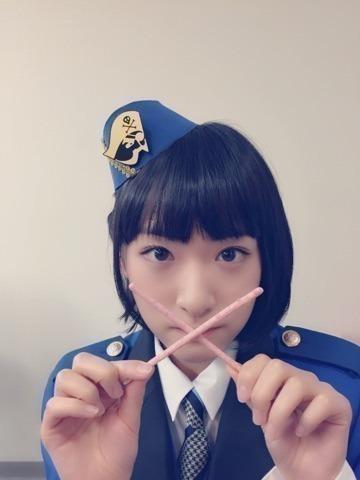

| 2015/11 23 Mon | 珍しい形のパスタ |
という題名にしなさいと
中田リーダーにいわれましたので設定しましたヽ(・∀・)ノ
本日はジャンポリ収録の日でございましたヽ(・∀・)ノ
中田リーダーと藤森さんは
梨花さんと生駒ちゃんに
ブログをきちんと更新しなさいと言ってきましたヽ(・∀・)ノ
梨花さんはツイッターを更新しましたヽ(・∀・)ノ
ぜひ覗いてみて下さいねヽ(・∀・)ノ
でも、
生駒ちゃんブログの文章の書き方や写メが意外とちゃんとやってるじゃんと
お二人にお褒めの言葉を頂きましたヽ(・∀・)ノヽ(・∀・)ノ
ちなみに私服もオシャレと言われたよ

こんな風にいつもみんなでわいわい仲良く、
時々梨花さんの手作りきゅうりの浅漬けを食べながら
ジャンプを読みながら収録してますヽ(・∀・)ノヽ(・∀・)ノ
今日も楽しかったな


撮影 中田リーダー
おしまいヽ(∀)ﾉ
コメント(856)
2015/11/23 20:06